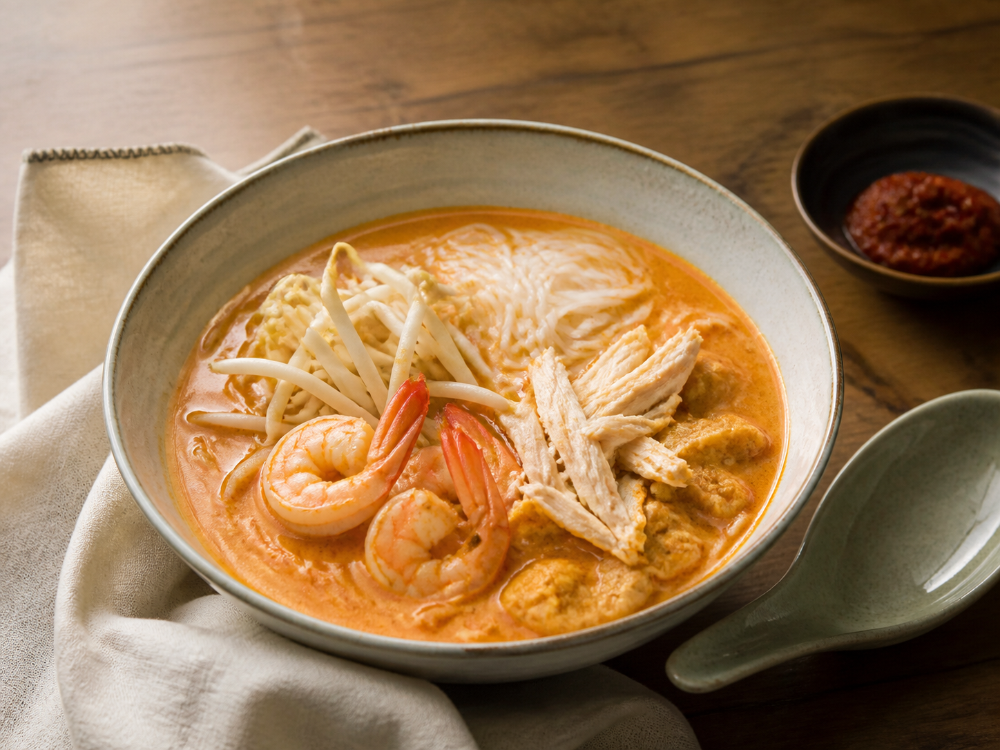

← All recipes
Malaysian · Easy
Easy Coconut Laksa
Creamy, spicy coconut noodle soup with chicken and prawns.

Let’s cook
Step by step
Prepare noodles according to the packet and divide between bowls.
Cook curry paste in a pot with 1 tbsp oil for 1 minute.
Add coconut milk and stock slowly while stirring. Bring to a gentle simmer.
Add chicken and simmer 7 minutes.
Add prawns and cook 3 minutes until opaque and curled.
Stir in fish sauce. Pour over noodles and top with sprouts and lime.
Read this firstIdiot-proof tip
Once coconut milk is added, use a gentle simmer rather than a violent boil.